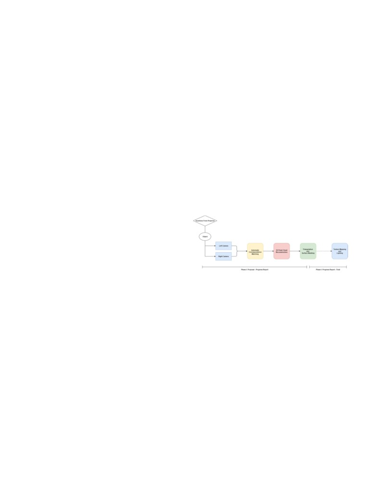
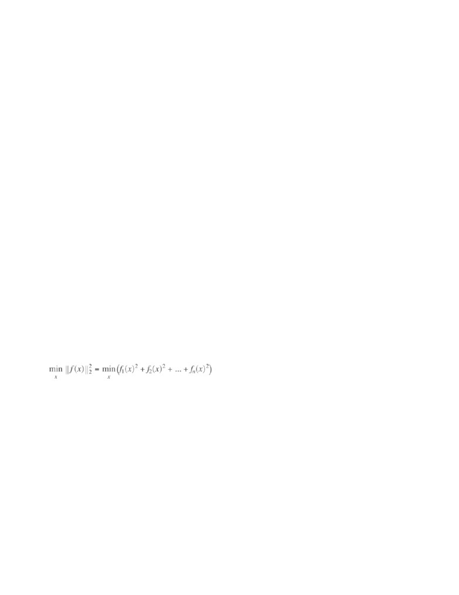
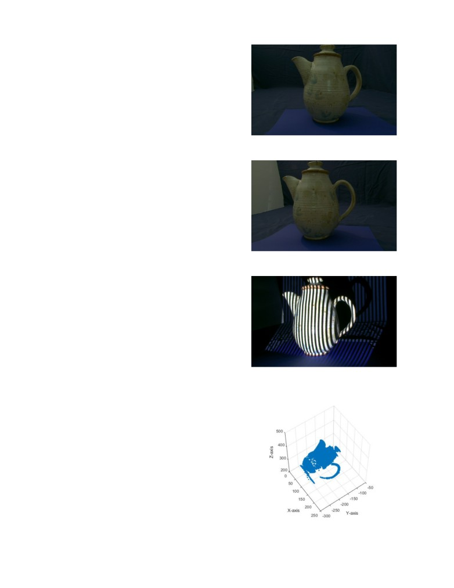
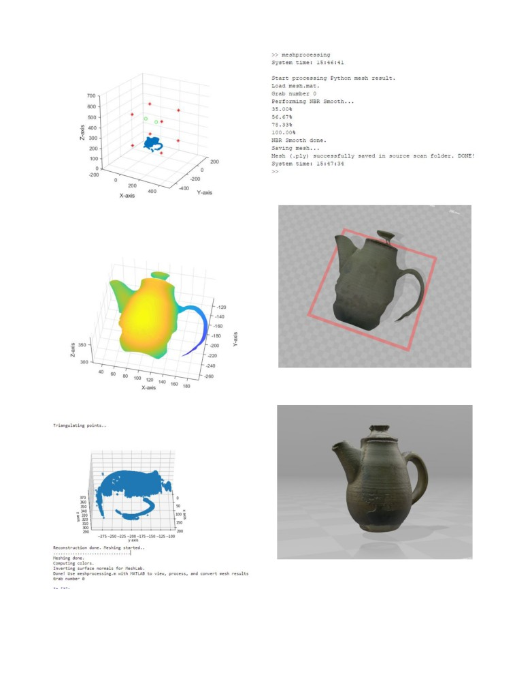
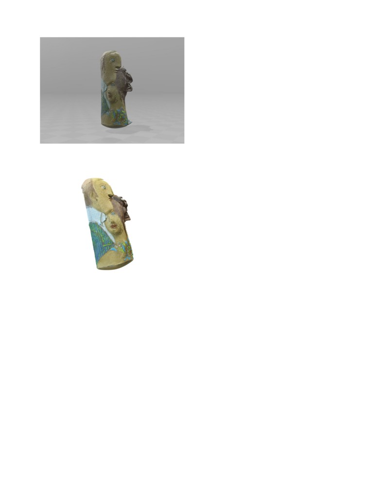

CS 117 FINAL PROJECT REPORT ANTHONY LIU 79553180
1
CS117 3D Reconstruction Project
Final Project Report
Anthony Liu - 79553180 - University of California, Irvine
Abstract—The system, named “3D Reconstruction Project”, assembles a complete pipeline for modern 3D high definition
scanning. The basic task of such system is to reconstruct an object with two cameras from different angles, a projector projecting
structured light, and proper algorithms. This system was originally proposed for high speed real-time 3D reconstruction,
however, due to issues of funding and resourcing, it was downgraded to a system resembling still 3D objects. There is a certain
degree of error comparing the output 3D shape to the original 3D object, primarily due to camera distortion, image blurring,
alignment accuracy, and other factors. Nevertheless, this system is accurate enough resembling less complex objects. Available
in Python-MATLAB or MATLAB versions.
Keywords — Stereo imaging, calibration, graycode, triangulation, mesh, mesh alignment, Poisson Surface Reconstruction,
MeshLab, MATLAB, Python, OpenCV, NumPy, Scipy, Matplotlib
—————————— ——————————
1 INTRODUCTION
he system primarily relies on the algorithms developed
T
through out the CS117 course in UC Irvine, e.g. trian-
2 SYSTEM OVERVIEW AND DESCRIPTIONS
gulation, meshing, reconstruction. Nevertheless, moving
from MATLAB coding space to Python was not an easy job,
and there has been a lot of corrections and new features
implemented to the newer code files. There were severe in-
compatibility issues found throughout the coding process,
and at times I was unable to continue coding in Python due
to outraging reconstruction inaccuracy and therefore re-
start the whole project in MATLAB. I almost had no hope
in finishing the entire pipeline in time. However, I made
my crucial decision moving back to Python, and very luck-
ily, the problems were solved and the whole pipeline is
Fig. 1. Original proposed pipeline of 3D reconstruction. The original
schedule was finishing surface meshing before progress report. How-
now ready for use.
ever, many unexpected errors had led to delays and failed milestones.
The general procedures of running this system is first cal-
ibrating the image with calibrate script, available in Python,
to calibrate the stereo imaging devices. There will be distor-
2.1 Image Capturing and Calibration Stages
tion factors in each camera, so it is best to remove distortion
out of the object scans prior to the surface reconstruction.
Capturing the images requires the scanning device pro-
After calibrating the camera, the calibration data will be
vided by Professor Charless Fowlkes, and the Professor
stored in .pkl pickle file for other uses. To use MATLAB for
has provided pre-scanned image sets for convenient starts.
reconstructing 3D point cloud and computing meshes, it is
The device, in essence, projects frames of structured lights
required to run calibToMATLAB.py to encapsulate the
(Gray code) onto the object, matching the points from left
data into MATLAB matrix format. Otherwise, calibration
and right camera data. Moreover, with my question, the
data will be stored in cache folder as described above.
Professor uploaded distortion free images so that we could
For reconstructing point cloud and perform mesh clean-
yield a better reconstruction result. See Figure 2a and 2b.
ing, there will be two ways available, but Python has been
For the calibration stage, since I chose not to use
the main pipeline for processing. It has been found that Py-
MATLAB as the primary coding language, there was no
thon has a significantly better runtime efficiency compared
provided libraries (e.g. Caltech calibration toolset) that do
to MATLAB script, though MATLAB is better at visualiz-
automatic image calibrations. There was also no support
ing data, computing over large sets of images has pushed
on Piazza over Python. Therefore, I had to research over
me more to the Python side. Note that the MATLAB code
online sources and discovered the calibration functions in
base will be available upon request, however, it will not be
the OpenCV libraries.
provided in the uploaded code folder.
The calibration program in calibrate.py assumes the
chessboard has a shape in 8 by 6 (as provided) and com-
————————————————
pute the corners object coordinates with square width
Anthony Liu, Undergraduate Computer Science Student. Donald Bren
measured (27.75mm in this case). It first finds the chess-
School of Information and Computer Science, University of Califronia, Ir-
vine. haoyanl2<at>uci.edu
board corners by calling findChessboardCorners function

2
CS 117 FINAL PROJECT REPORT ANTHONY LIU 79553180
from Python OpenCV (cv2), and then improve the corner
triangles, we will call mesh.m to do the job. The procedures
detection accuracy with cv2.cornerSubPix algorithm. After
of triangle generation and mesh cleaning is 1) to remove
calculating the corners image coordinates, it computes the
points outside a given bounding box. The bound box
camera focal distance, principle points, rotation vector,
boundaries can be set in demo.py, or be manually hard
translation vector, and distortion matrix with cv2.cali-
coded in mesh() function in mesh.py. Points outside the
brateCamera function. Finally, the program evaluates the
bounding box will be removed (Fig. 5).
calibration result by re-projecting the points and saves the
There are, however, circumstances that the default
calibration data to .pkl file for future uses.
boundary does not include any 3D points from the recon-
For users who are more familiar with MATLAB, execut-
structed point cloud. In this situation, you will need to
ing calibrationToMATLAB.py will generate a .mat file con-
manually adjust the boundaries in demo.py. 2) A list of tri-
sisted of the calibration data to ../calibrations/ folder. In
angles will be computed for triangular pruning right after
that folder, you will find two calibration data files for
rectangular bounded cleaning, this uses Delaunay triangu-
MATLAB use, one for undistorted, and one for distorted.
lation function from SciPy.spatial library. With this list of
MATLAB scripts of the rest of MATLAB pipeline will be
triangles, edge lengths are computed and triangles with
available per request to haoyanl2<at>uci.edu.
edge longer than TRITHRESH will be removed. By default,
TRITHRESH is set at 10. After triangular pruning, isolated
points will be removed and triangle vertex indices (tridx)
2.2 Reconstruction and Triangulation Stages
will be mapped to their new corresponding points (Fig. 6).
The reconstruction stage (reconstruct.py) utilizes the de-
Note that the algorithm here computes at average case
code program (decode.py), decoding the images sets with
O(n2) and worst-case O(n3), significantly faster than the av-
Gray code to find valid points, and find the corresponding
erage case O(n3) in MATLAB (n by n matrix and n vertices
points between left and right images (Fig. 3). There are two
in worst case).
auxiliary functions implemented for the reconstruction
After mesh cleaning, color values gathered from recon-
function. To properly use these functions, it requires
struct.m are computed and mapped to 3D vertices (Fig. 8).
NumPy library version
1.13 or newer. The
_inter-
A trivia here was that OpenCV reads images in BGR color
sect_matlab function was adapted from StackOverflow at
space rather than RGB. The misconception here led me to
30 minutes spent on researching the cause of blue color
find-intersect-indexes-and-values-in-python.
casting in final mesh. When color mapping is done, trian-
The triangulation stage (calling triangulate() from tri-
gle normal vectors are inverted following “Right-hand
angulate.py) utilized the triangulation algorithm I wrote in
rule” (counter-clockwise vertex order and normal in direc-
the previous assignments. It uses the rotation and transla-
tion of thumb). This is because most graphics libraries (i.e.
tion matrices of each camera to compute eigen-vectors in
OpenGL) as well as processing software (e.g. MeshLab)
the directions to points, and it then computes the least
utilize such counter-clockwise normal orientation, unlike
square quadratic to solve the depth values Z0 and Z1. Fi-
MATLAB doing so in reverse.
nally, it computes the average of 3D coordinates from left
The final cleaned up mesh will be saved as mesh.mat
and right cameras [Eq. 1].
(default path: ../cache/) for performing neighbor smooth-
ing and .ply file encapsulation in MATLAB. There are de-
tailed console messages notifying user what are happening
and what to do next. The file to run for the above function-
alities is meshprocessing.m.
Notice that for this section of the pipeline, I did NOT
Eq [1]: Nonlinear least-squares solver solving the curve fitting problems
make it automated with e.g. for loops for each grab. As I
At the end of reconstruct.py, triangulation result is be-
have noted in demo.py, I strongly believe that due to hu-
ing displayed on a scatter plot, using Axes3D from
man errors placing objects when scanning, the centers of
mplot3d library (Fig. 4). After displaying the scatterplot,
mass change over grabs, and it is not ideal for the user to
the triangulated 3D points, corresponding image points
redo the whole loop once they found one bounding box or
from left and right cameras, and corresponding image
TRITHRESH being not ideal. I also do not think that re-
color values are saved to MATLAB data file and returned
questing user inputs for every grab is an ideal choice since
for mesh.py use.
the users have no idea on the outcome thus no idea on the
To better understand how reconstruct.py produce re-
input values. Manually running on every grab ensures
sults, reconstruct.py can be run alone with a non-empty
maximum control and versatility over each mesh gener-
scan directory and a not-null threshold value. If either
ated.
value is left blank the function will raise ValueError.
For user convenience, there is a MATLAB script recon-
2.4 Neighbor Smoothing and File Exporting
structed_view.m in python_code/ for easier viewing of the
This section utilizes nbr_smooth algorithm
[1] and
reconstruction result and error checking.
mesh_2_ply tool [2] provided by Professor Fowlkes and
2.3 Delaunay Triangulation and Mesh Cleaning
Omar Santiago from CS117 in Spring 2015. My deep appre-
To generate meshes (triangles) with the 3D points from re-
ciation gives to both of them.
construct.py, and to cleanup bad vertices as well as
Nbr_smooth algorithm run through the surfaces and

LIU, UC IRVINE
3
compute the mean with the neighboring values. The value
NBR_PASS was passed onto this program from mesh.py,
and it sets the total round this neighbor smoothing is per-
formed on each vertex.
Mesh_2_ply function helps the users to encapsulate tri-
angle indices and 3D points into .ply 3D model file. With
such, users will be able to import their mesh result into 3D
processing software, e.g. MeshLab.
2.5 Alignment and Poisson Surface Reconstruction
To align the meshes in a timely manner, we can use the ex-
Fig. 2a. Ground truth and color image of teapot left view (grab 0).
isted MeshLab - an open source software developed by
more detail) [3].
In MeshLab software, after we import all the meshes
generated from the earlier scripts in the pipeline, we can
use point-based alignment tool in ‘Align’ menu. For higher
accuracy regarding smooth surfaces, it is suggested that
users should unclick “use false color” as they are using
point cloud alignment tool. Once all the meshes are aligned
and glued, press “Process” to further reduce the inac-
cuaracy.
It is also possible to implement such alignment in
MATLAB. To compute the alignment transformation ma-
trices such as rotation and translation matrices, we will ask
Fig. 2b. Ground truth and color image of teapot right view (grab 0).
the users to click on points. Once we have points clicked,
we will apply a similar algorithm as we used to triangulate
points, computing the singular value decomposition (SVD)
and two transformation matrices with least errors [4].
However, due to the matter of time, this algorithm was not
implemented in MATLAB.
With the meshes aligned, there are still holes and rough
surfaces. We will need to perform surface reconstruction
on our combined mesh. In this case, we adapt “Screen Sur-
face Reconstruction” algorithm developed by Michael Ka-
zhdan (Johns Hopkins University) and Hugues Hoppe
(Microsoft Research) [5]. Before executing the surface re-
construction, it is advised that users read the original jour-
Fig. 3. Gray code being projected on to objects. Gray code maps the
nal and instruction first.
correspondencies between left and right camera grabs.
Once we have a set of parameters in mind, we can press
process and wait for the final reconstruction result!
Be aware that the MeshLab is not bug-free so at times it
will show error of unreferenced vertices before surface re-
construction. Try cleaning the unreferenced vertices or iso-
lated triangles to stop the error message. Detailed instruc-
tion will be provided in README.txt.
3 DEMONSTRATIONS AND FIGURES
Below are original scan files and screenshots of running the
demo scripts:
Fig. 4. Triangulated and reconstructed point cloud with teapot grab
0 in reconstruct_view.m.

4
CS 117 FINAL PROJECT REPORT ANTHONY LIU 79553180
Fig. 7b. Meshprocessing.m with real time status feedback.
Fig. 5. Bounding box (red asterisks) and camera positions (green o)
shown (MATLAB pipeline only).
Fig. 8. Single refined mesh with HD texture mapped. Viewed in Win-
dows 3D Builder.
Fig. 6. Trisurf showing final processed mesh with colormap jet.
Fig. 9a. Fully aligned and reconstructed teapot with HD texture
mapped. Viewed in Windows 3D Builder.
Fig. 7a. Python demo.py API with continuous status feedback.

LIU, UC IRVINE
5
5 TRIVIA AND INTROSPECTION
Talking about the coding part has been a painful job for me.
This is not the only time I dreamed big when proposing
but found out later how complicated a job can be. Python
has not been the best tool for mathematical operations like
3D geometricals and linear algebras. Although the pro-
gram I wrote in Python performed significantly faster than
any in MATLAB, I would say MATLAB has many ad-
vantages over Python. A small example would be being
able to freely rotate around 3D scatterplot. When I finished
with reconstruct.py and triangulate.py, my 3D points were
extremely out of shape. 3D scatterplot rotation is not al-
lowed in Python, so I had to write scripts to transfer the
reconstruction data to MATLAB and analyze them.
Furthermore, there were two major setbacks during the
Fig. 9a. Final aligned and reconstructed couple with HD texture
road to this finale. One being spending too much time ex-
mapped. Viewed in Windows 3D Builder.
amine the appropriate boundaries and parameters for
mesh cleaning. The other being spending too much time
on aligning the 3D meshes due to unforeseen bad MeshLab
alignments. Neither can be avoided nicely... I have yet to
try all the possible combination over parameters, and I be-
lieve I only attempted a tip of an iceburg. Yet, I am satisfied
with all the attempts I made, whether they were bad or
good attempts.
6 HELPFUL HINTS
Detailed instructions on how to run the pipeline
are available in “README.txt”. Please read be-
fore running the program
Disable “False color” in MeshLab alignment to
see the mesh color textures
Try Delaunay triangulation with both xR and xL
to see whichever yields better result
Fig. 10. Final aligned and reconstructed couple with HD texture
OpenCV imread() returns color channels in
mapped. Generated .3mf files and displayed in Microsoft Word.
“BGR” order. MATLAB imread() returns in
“RGB” order.
4 RECONSTRUCTION RESULT EVALUATION
Do as many scans as you can to avoid as much
Rating the result compared to best expected outcome, this
error as possible and to produce nice result
pipeline is rated 8 out of 10. There are shortcomings of this
Check inputted file paths if find any unknown
system, for example, a lack of accuracy when aligning the
errors in the program.
meshes, causing the more complex parts (e.g. hair) to
Python IDLE will not run this program
misalign and reconstructed as a weird shape.
Noisy data is rare, though it exists. There had been iso-
MATLAB = visualization; Python = Efficiency
lated surfaces and weird triangle spiking out from the
MeshLab is not bug-free, however, its tools are
meshes, causing the final reconstruction result to be noisy.
quite useful
The countour of the reconstructed model, nevertheless, is
in fact closer to ground truth than originally expected.
Moreover, some meshes display significant mesh
7 CONCLUSION AND FUTURE WORK
stretching in camera Z axis direction away from the camera
This project has achieved a milestone for now, however, it
position. The reason is yet unknown, though it has been
will not be suspended as CS117 course ends. It is now
thought because of camera calibration errors and remained
available in MATLAB and Python versions, and I will con-
distortion factors.
tinue to develop them as I graduates. For the next months,
Some meshes, however, have less common points with
external code (e.g. nbr_smooth, mesh_2_ply) will be re-
the other meshes. This caused some alignment steps to be
placed by self developed, more efficient algorithms. Since
much more difficult than the rests. In both cases above, in
the time was limited and the alignment has not been very
some circumstances manual alignments were adapted to
promising, I will be looking for alternative ways to com-
achieve better results than point-based alignment.
pute the correspondencies (e.g. using SVD and LSQ).
6
CS 117 FINAL PROJECT REPORT ANTHONY LIU 79553180
Nevertheless, I have been glad that this 3-week journey has
produced a decent looking result.
8 ENDNOTES
All the operation guidelines are enclosed in the RE-
ADME.txt file. Please contact at my email if you experience
any runtime error or have any questions about instruc-
tions. This pipeline should be very easy to manipulate with
once your environment variables and parameters (e.g. file
paths, boundaries) are set correctly.
On the other hand, I have been advised that a real time
3D scanning project with AR kit on Apple iOS platform is
on proposal. I would be very glad if I would be able to in-
tegrate some parts of my system onto this project.
ACKNOWLEDGMENT
I wish to thank Professor Charless Fowlkes in person for
teaching me CS116 and 117 for two quarters, guiding me
through a whole new area of unknown. I would also like
to thank TA Kirak for holding scanning session and an-
swering Piazza regularly; Omar Santiago for
mesh_2_ply.m. Also, my appreciation goes to all the stu-
dent Piazza responders who have provided me good ad-
vices.
REFERENCES
[1] C. Fowlkes. University of California, Irvine: CS117 Project Re-
ject/project_code/nbr_smooth.m. Web archive.
[2] O. Santiago, C. Fowlkes. University of California, Irvine: CS117
ject_code/mesh_2_ply.m. Web archive.
[3] P. Cignoni, M. Callieri, M. Corsini, M. Dellepiane, F. Ganovelli,
G. Ranzuglia. “MeshLab: An Open-Source Mesh Processing
Tool.” Sixth Eurographics Italian Chapter Conference, page 129-
136, 2008
[4] O. S. Horung, M. Rabinovich. “Least-Squares Regid Motion Us-
ing SVD”. Department of Computer Science, ETH Zurich. 2017
[5] M. Kazhdan, H. Hoppe. “Screened poisson surface reconstruc-
tion.” ACM Transactions on Graphics (TOG), 32(3), 29, 2013.